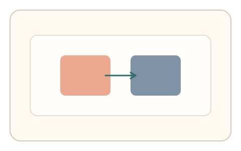
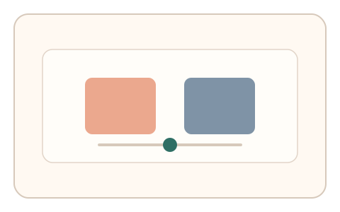
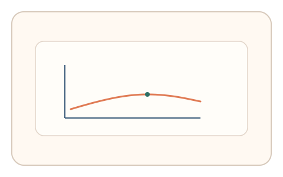

#39
视觉思考范式：时域/适应/残影
已扩展
交替主导判别
两个模式快速交替，用户调节到主导感受平衡点，以平衡阈值与路径验证真实性。
概念原文
两个模式快速交替呈现，用户调整直到“主导感受”相等，记录平衡点与反应路径。
借助视觉主导权/竞争的主观阈值。
研究背景
视觉竞争会导致主导感受在不同刺激间交替，主观平衡点具有可测的个体区间。通过测量平衡阈值与调节路径，可形成难以伪造的知觉信号。
核心机制
- 呈现两种模式快速交替的刺激。
- 提供滑杆调节两者强度比例。
- 用户调节到主导感受相等。
- 记录平衡阈值与调节曲线。
用户流程
- 步骤 1：用户看到两种模式交替呈现。
- 步骤 2：用户调节比例直到主导感平衡。
- 步骤 3：系统记录平衡点并判定。
判定信号
平衡阈值区间
主导竞争存在稳定的主观平衡点。
调节路径与回撤次数
真实判断通常呈逐步逼近与微调。
判定逻辑
评估平衡阈值是否落在人类区间，并结合调节收敛曲线；一次到位或固定值判异常。
对抗面
- 脚本直接设置固定比例
- 重放真实用户的调节序列
防御与缓解
- 随机化交替频率与模式细节
- 加入短时扰动与噪声避免固定模式
- 叠加鼠标轨迹与微时序信号进行多信号判定
可达性与风险
提供更低频率或替代任务模式，避免对视觉敏感用户造成不适。
- 快速交替可能引起视觉疲劳
- 显示器刷新率影响交替感受
可视化状态

状态 1：交替刺激
两种模式快速交替呈现。

状态 2：主导调节
用户调节比例直到平衡。

状态 3：平衡判定
记录平衡点与调节路径。
参考资料
Binocular rivalry
说明视觉竞争与主导交替。
Visual perception
说明视觉主导与竞争的基础。